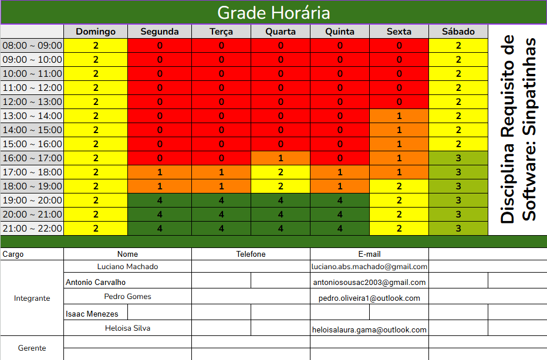

Heatmap da Equipe
Este heatmap visualiza a distribuição de carga de trabalho e o envolvimento dos membros da equipe ao longo das diferentes etapas e entregas do projeto. As cores mais intensas indicam maior alocação de tempo e esforço.
